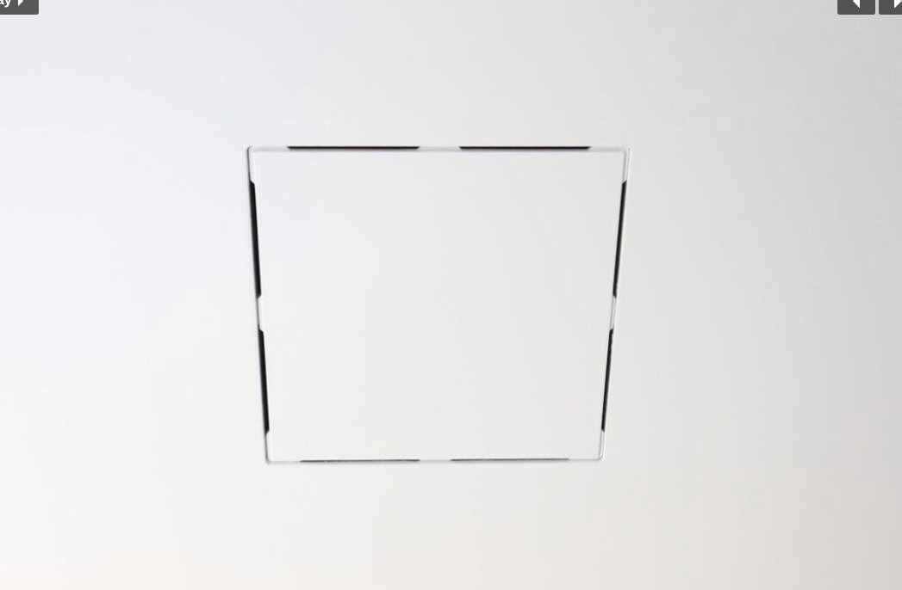
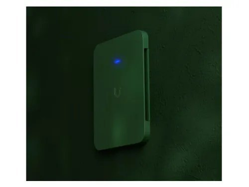

Most people hide their Wi-Fi router in a closet or tuck an access point behind a piece of furniture and call it good. The problem is that hidden equipment means compromised coverage — and in a luxury home, that's an unnecessary tradeoff.
Professional-grade access points are designed to live out in the open, and when installed correctly, they virtually disappear into your home.
Flush Ceiling Mount
For the cleanest possible look, a flush ceiling panel completely conceals the access point behind a thin, paintable cover that sits tight against the ceiling. From below, it looks like a subtle vent or architectural detail — not a piece of networking equipment.
This is the premium option for new construction or any project where aesthetics are a top priority. The access point lives behind the panel, fully hidden, while still delivering full wireless coverage through the perforated face.

Flush ceiling panel — completely conceals the access point. View at Wall-Smart →
Ceiling Access Points
Ceiling-mounted access points sit flush against the ceiling and are easily mistaken for a smoke detector. They're unobtrusive, they look intentional, and they provide excellent coverage in large open spaces like great rooms, kitchens, and open-plan living areas. No blinking router on a shelf, no cables snaking across a countertop — just clean, fast Wi-Fi from above.

UniFi ceiling access point — blends naturally with recessed lighting.
Painted Wall Access Points
For offices, dens, hallways, or any room with walls to work with, wall-mounted access points are a natural fit. They install cleanly, blend into the wall, and can even be painted to match your wall color — making them virtually invisible. They can also replace a standard ethernet outlet in areas where wireless coverage matters more than a wired port.

UniFi wall access point painted to match — nearly invisible. View on UniFi Store →
Built to Grow With Your Home
One of the advantages of professional-grade networking equipment is how easy it is to upgrade individual access points as technology improves. You're not replacing your whole system — just swapping a unit when the time comes. Wi-Fi 7 is here now, and having the infrastructure already in place means you're ready for whatever comes next.
Coverage Where It Actually Matters
Hiding your access point in a closet is one of the most common mistakes homeowners make. Walls, doors, and distance kill signal strength. Properly placed ceiling and wall access points — positioned where coverage is actually needed — deliver faster, more reliable Wi-Fi to every corner of your home, indoors and out.